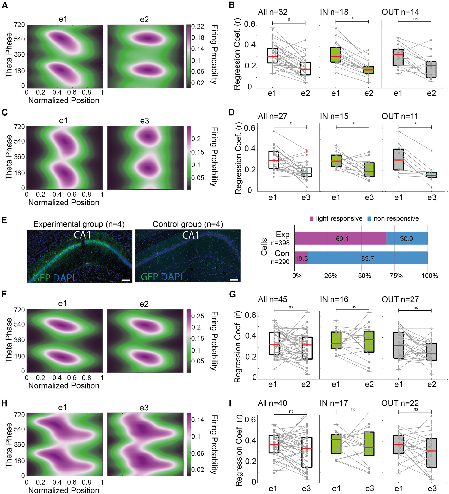
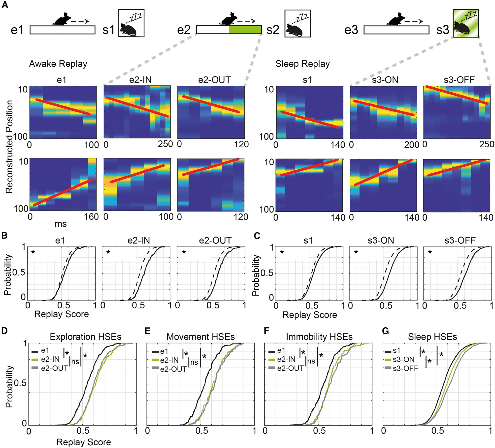

The Research Context
Cholecystokinin-expressing interneurons (CCKIs) in the CA1 region of the hippocampus are hypothesized to
shape pyramidal cell firing patterns and regulate network oscillations. To probe their specific
roles, our laboratory utilized advanced optogenetic and chemogenetic silencing tools in freely moving
mice. While the experimental team executed the highly complex surgeries and data
acquisition, my primary contribution to this publication was leading the computational analysis of the
resulting high-density electrophysiological data, specifically focusing on temporal coding dynamics,
place field architecture, and sequence replay.
Theta Phase Precession Analysis
One of the central questions of the study was whether perisomatic inhibition from CCKIs regulates theta
phase precession—a phenomenon where place cells fire at progressively earlier phases of the theta rhythm
as an animal traverses a place field. To answer this, I built an analytical pipeline to track spike
timing relative to the theta oscillation phase.
- Methodology: I utilized linear-circular regression to quantify the strength and
correlation of theta phase precession across different experimental sessions.
- Key Finding: The analysis revealed that optogenetic silencing of CCKIs
fundamentally disrupts the precise temporal coding of place cells. Unlike previously
studied interneurons, silencing CCKIs did not just shift the phase, but severely impaired normal
theta phase precession.

Figure 6. Attenuated theta phase precession after CCKI silencing. Smoothed firing probability and regression coefficients demonstrate impaired theta phase precession across normalized positions following CCKI inhibition. This severe disruption highlights the fundamental requirement of perisomatic inhibition for maintaining precise temporal codes during spatial navigation.
Sequence Reactivation (Replay) Decoding
Because CCKI silencing disrupted theta phase precession, a logical hypothesis would be that trajectory
replay during sleep would also be impaired. To test this, I analyzed the reactivation of neuronal
sequences during both awake exploration and post-exploration sleep states.
- Decoding Algorithms: I implemented Bayesian (Classic) decoding methods and
identified High Synchrony Events (HSEs) to score trajectory replay fidelity. The analysis
compared actual replay scores against shuffled data (place field rotation) to ensure statistical
rigor.
- Unexpected Results: The computational analysis yielded a surprising result:
silencing CCKI activity actually enhanced the reactivation of neuronal sequences during
both waking and sleep states. This demonstrated that robust sequence replay can occur
even when the preceding theta phase precession is severely disrupted.

Figure 7. Reactivation is altered by CCKI silencing. Reconstructed spatial trajectories based on high synchrony events (HSEs) showing enhanced sequence replay scores after CCKI silencing during both awake exploration and sleep. These unexpected results suggest a complex mechanism where CCK interneurons actively constrain and filter the reactivation of neuronal sequences, preventing aberrant runaway excitation.
Network Oscillations & Place Field Architecture
Beyond temporal coding, I analyzed the broader impact of CCKI manipulation on rhythmic network states and
spatial tuning.
- Oscillatory Power: I computed Power Spectral Density (PSD) using multitaper methods
to evaluate state-dependent power changes. This confirmed that CCKI silencing
significantly enhanced Sharp-Wave Ripples (SWRs), increasing both ripple band LFP power and
pyramidal cell firing.
- Place Field Dynamics: By calculating spatial firing properties, the analysis showed
that CCKI inhibition led to wide disinhibitory network changes, resulting in expanded place fields
and enhanced pyramidal cell burst firing.